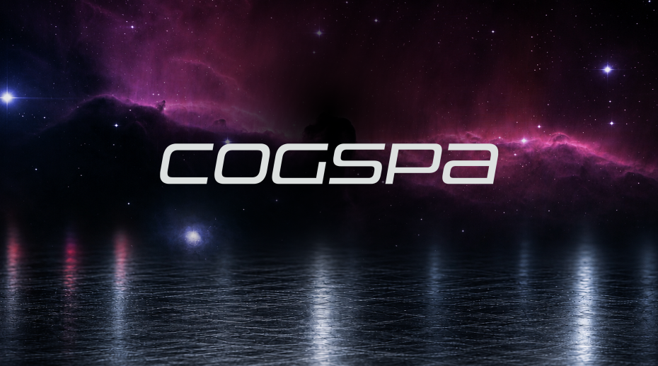
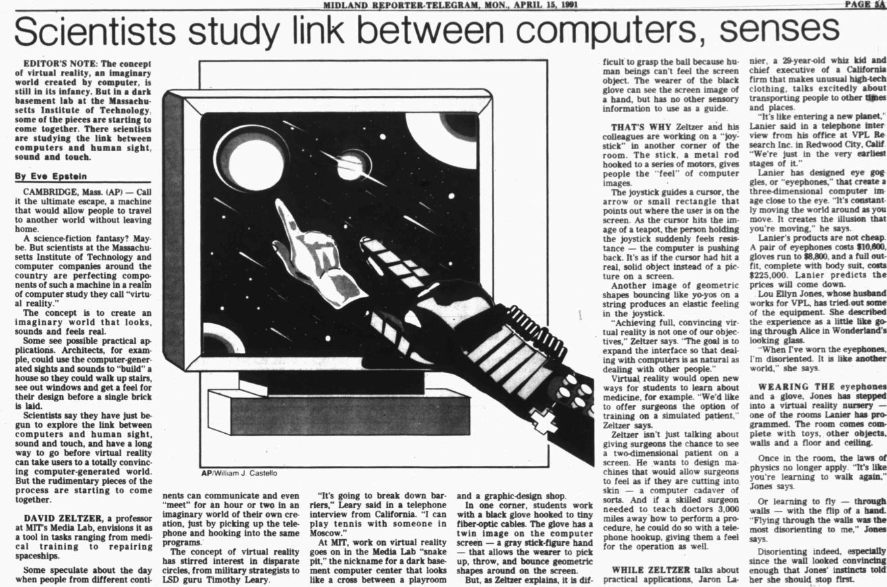

Nov 15, 1972Idea
Joe Micallef is born
The endless drawing starts early — the first territory of imagination, long before there's a computer to put it in.
A 35-Year Timeline · Cognitive Space → Systems, Pipelines & Automation
Many people who know me or have seen the COGSPA handle over the years have wondered what it means. The short version: it began as "Cognitive Space" — a name I adopted more than 35 years ago for the nexus of imagination, art, computation, and emerging technology.
This timeline traces that idea from a TI-99/4A and a Dungeons & Dragons box set, through a 1990 breakfast table in Michigan, commercial VR arcades, USC, supercomputer CGI, 3D printing, teaching, and AI — to what COGSPA means in 2026.

Before Cognitive Space had a name, it had a kid in Michigan with a pencil, a keyboard, and a box of dice.
The endless drawing starts early — the first territory of imagination, long before there's a computer to put it in.
Purchased when TI's home computer arrives, and the coding begins — in BASIC. The first taste of telling a machine what to build, and the start of a throughline that runs through ActionScript, Python, and full-stack AI development.
Bought around the same moment as the TI-99/4A. D&D (and later Gamma World) turns drawing into world building: rules, maps, systems that generate stories. Art and computation start growing side by side — they'll never separate again.
The pieces arrive: desktop publishing, commercial CGI, and computer animation becoming an art form.
Digital Productions makes one of the landmark leaps from physical models to extensive CGI, using one of the world's most powerful computers. A film I'd meet again — its Technical Manager, Ken Dozier, becomes my mentor in 2008 ↓.
Adobe puts typesetting, prepress, and production directly on a designer's desk — the shift that will later shape my college decision.
▷ Adobe · PostScript HistoryJohn Lasseter's short causes a sensation partially finished, premieres at the Ottawa International Animation Festival, and becomes the first entirely computer-animated film to win the Academy Award for Best Animated Short.
▷ Pixar · Our StoryTypography, illustration, photography, digital imaging — soon motion graphics — converge on a single machine.
▷ Adobe · Photoshop HistoryAt The Second Animation Celebration, I'm enthralled by the possibilities of computer-generated animation. (The first Ren & Stimpy short appears at the same festival — for my zanier side.) Ten days before this screening, Photoshop 1.0 shipped. Mondo 2000 is defining cyberculture. Commercial VR is arriving. Everything converges here.
One morning in 1990, my mom hands me a newspaper article about something called virtual reality. She knew immediately I'd be fascinated. She was right — for 35 years and counting.
An AP story on virtual reality, featuring Timothy Leary as an evangelist for the new technology. The detail that stays with me: someday, two people separated by enormous distances might enter a virtual space and play tennis together.

Cyberspace, VR, digital culture, hackers, artists, and thinkers like Jaron Lanier — the countercultural futurism that frames what the technology could mean, layered onto the imagination already built through drawing and D&D world building.
During my one term at MSU, I hear Leary talk about virtual reality and its emerging possibilities in person.
VR escapes the research lab: headsets, tracked controllers, multiplayer computer-generated worlds you can step inside. Commercial arcade systems follow in 1991.
▷ IEEE ComSoc · Virtuality HistoryA club that lets under-21s in specifically to try the game. I stand in one Virtuality 1000CS station, my friend Wayne in the other. Inside: polygonal avatars on elevated checkered platforms, up to four networked players, and a giant pterodactyl circling overhead, swooping down to carry players away.
It wasn't about reproducing reality. It was about imagination — and how important, yet misunderstood, imagination could be. If a computer could construct a world, why should that world be constrained by the physical one?
c.1990 — 1991 · The naming
An internal space with seemingly limitless room for exploration, invention, and discovery — something almost analogous to imagination itself. Before social media, before iPhones: the name stuck.
There's no academic path for what I want to become, so I build one — and discover the boundary between art and code is artificial.
Computer animation exists, but dedicated programs are rare. Rather than choosing between the two paths, graphic design and emerging digital media become the practical way to combine them. The ultimate goal is still computer animation.
JavaScript appears in 1995. Flash in 1996, growing into a programmable interactive media environment. Maya 1.0 ships in 1998, built for scripting and extension. ActionScript formally arrives with Flash 5 in 2000. Python emerges and heads toward connecting graphics, science, automation, and AI.
Graduate school turns the pursuit into formal study: art, computation, research, cinema, experimentation — and a procedural idea that changes everything after.
I enter graduate study in computer-generated animation; during my time there the division becomes the John C. Hench Division of Animation & Digital Arts. I become an Adobe Scholar and receive an Annenberg Fellowship, opening collaboration with the Viterbi School of Engineering.
▷ USC · Hench DivisionWith the makers of Houdini, I go deeper into a procedural approach: instead of manually constructing every result, artists build systems that generate them. Build the underlying systems — which in turn can build new systems.
At USC's Western Research Application Center, I work with someone who participated directly in the CGI history that fascinated me: AFI's credits list Dozier as Technical Manager at Digital Productions on The Last Starfighter ↑, and a 1983 SIGGRAPH program lists him as an executive technical director on Cray-based work. His research pushes physics, cybernetics, parallel processing, early AI, LISP, and information systems into manufacturing and supply chains — and he pushes all of it onto me.
Digital geometry becomes physical matter, systems become studios, and studios become curriculum.
A 409-page guide to modeling and designing for additive manufacturing, deliberately written for artists, designers, engineers, and makers at once — because that interdisciplinary territory is the whole point.
▷ Springer · Book RecordThe focus shifts from producing individual pieces of media to building the production systems that make them.
Digital media education at Pasadena City College, OTIS, and eventually Ryman Arts. The question shifts from "How do I make this?" to "How do I construct a system someone else can understand, reproduce, and build on?" — leading naturally to curriculum, learning systems, documentation, interactive tools, and software.
Machine learning returns me to the question VR first posed: what happens when the computer stops being merely a tool for representing ideas — and becomes an environment where ideas themselves can be explored?
Early experiments with AI image systems and creative sandboxes, then large language models. Modern AI dramatically lowers the barrier between an idea and its functioning implementation — computer science becomes explorable. JavaScript to Python to React to APIs to unfamiliar architectures, at a pace previously impossible for one person.
AI-assisted development, creative automation, production pipelines, Adobe integrations, 3D systems, generative workflows, enterprise tools, forward-deployed engineering. Not a departure from the path started 35 years ago — its operational form.
By December 1992, an academic journal was pairing "cognitive space" with virtual reality — the exact junction a teenager in Michigan had named for himself two years earlier.
The original meaning · c.1990
The nexus of imagination, art, computation, and emerging technology. Technology gives us new spaces in which imagination can operate.
The second meaning · 2026
Not a different definition. The operational form of the original one.
Cognitive Space is the idea · COGSPA is how I build it